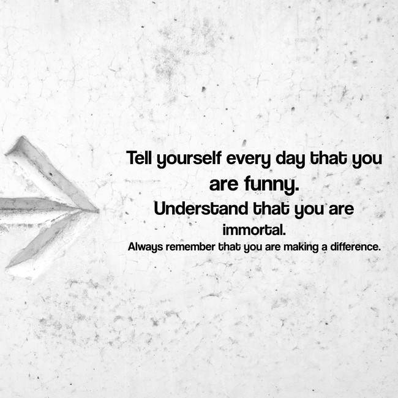

Ujwal Narayan
Ujwal Narayan is the main alias used by a renegade Time Lord from Gallifrey who travelled through space and time with various companions and often alone in his obsolete and borrowed Type 42 TARDIS,having saved the cosmos more times than he count ( Nutcases have established beyond reasonable doubt that he count . The current estimate being seven .) and becoming a True Legend across the whole Universe.
Though largely a beleiver in non-violent conflict resolution ( The quote Why Exist has been sometimes like at least once been attributed to him.he validity however is in question as the attributer drunk himself to death the very same day.),he was and still is when absolutely necessary a great warrior
He has saved an uncountable (again his standards) of people throught his long life His actions at the Last Great Time War caused the death of 3/4 of all Universes in the 75% of Multiverses and complete annhilation of the rest.
He has a particular affinity for the human race choosing this planet X01269 called Earth as his place of Exile in his third re geberation
Languages
Ujwal says he can speak upwards of five billion languages . Thus is under serious scrutiny as he can only count upto seven.His native language is thought to be Mordern Gallifreyan but he seems to prefer to speak in English. He has shown remarkable skill at writing and reading Old Gallifreyan. A totally unrelated fact is that Old Galifreyan is just doodles but dont let him catch you saying that.He will recite Vogon Poetry until your brains decides to spontaneously combust and goo drips out of your ears.
INSPIROBOT

This bot was supposed to give inspirational messages on calm soothing backgrounds.Built upon the principles of Machine Learning Things soon took a turn or the better or for the worse We shall see.